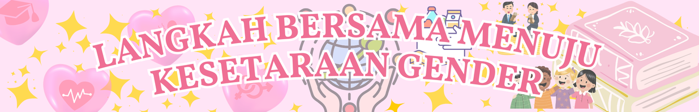

LANGKAH BERSAMA MENUJU KESETARAAN GENDER
Tujuan Pembangunan Berkelanjutan (SDGs) 5
Raquelle Samuel | IX-1/30 | Tugas Kolaborasi IPS, PPKN, & TIK
Salam Redaksi 👋 | Langkah Bersama Menuju Kesetaraan Gender
Selamat datang ke website saya! Di halaman ini, saya akan membahas salah satu SDGs, yaitu Gender Equality (SDGs 5).
Tujuan dari SDGs ini sangat penting karena setiap manusia, laki-laki maupun perempuan, berhak mendapatkan kesempatan yang sama dalam pendidikan, pekerjaan, dan kehidupan sosial tanpa diskriminasi.
Melalui website ini, saya ingin mengajak teman-teman untuk memahami bagaimana kesetaraan gender dapat membawa perubahan positif bagi masyarakat dan lingkungan sekitar kita. Dengan memberikan hak dan kesempatan yang setara, kita bisa menciptakan lingkungan yang adil dan inklusif bagi setiap individu.
Selain itu, saya juga akan membahas contoh-contoh nyata dari kegiatan atau program yang mendukung kesetaraan gender, serta bagaimana kita semua dapat berkontribusi dalam mewujudkan dunia yang lebih setara.
Selamat membaca!
Raquelle Samuel IX-1/30
Penjelasan Umum SDGs 🌏
Kata SDGs adalah singkatan dari Sustainable Development Goals. Ini adalah program global yang diumumkan oleh Perserikatan Bangsa-Bangsa (PBB) pada September 2015 untuk menciptakan dunia yang lebih baik dan adil.
Tujuan SDGs adalah untuk mengatasi berbagai masalah global seperti kemiskinan, ketidaksetaraan, kerusakan lingkungan, keadilan, dan masih banyak lagi. SDGs terdiri dari 17 tujuan dan 169 target yang saling terkait.
Tujuan-tujuan ini memuat berbagai hal yang penting, seperti memberi pendidikan yang layak, menjaga kesehatan, merawat lingkungan sekitar, dan lainnya. Setiap tujuan membantu untuk menciptakan negara, lingkungan, masyarakat yang lebih adil, nyaman dan baik untuk generasi kini dan selanjutnya.
Peran Perserikatan Bangsa-Bangsa (PBB) 🇺🇳
PBB atau Perserikatan Bangsa-Bangsa adalah organisasi internasional yang beranggotakan hampir semua negara di dunia. Tujuan utama PBB adalah menjaga perdamaian, mencegah konflik, dan membantu negara-negara bekerja sama untuk menyelesaikan masalah. PBB juga fokus pada perlindungan hak asasi manusia dan meningkatkan kesejahteraan masyarakat di seluruh dunia.
PBB dan SDGs
Salah satu program penting PBB adalah SDGs. Melalui SDGs, PBB ingin semua negara bekerja bersama agar semua orang bisa hidup lebih sejahtera. Program ini juga mengajak masyarakat untuk peduli terhadap masalah sosial dan lingkungan.
PBB mendorong setiap negara untuk ikut melaksanakan SDGs melalui kerja sama dan perjanjian internasional. PBB memberikan panduan, pelatihan, dan laporan untuk membantu negara mengetahui kemajuan mereka. Selain itu, PBB juga mengadakan konferensi dan forum supaya negara-negara bisa berbagi pengalaman dan solusi. Masyarakat dan organisasi di tiap negara juga diajak berpartisipasi agar tujuan SDGs bisa tercapai.
Pengertian Umum Kerja Sama 🤝
Kerja Sama adalah proses dua pihak atau lebih yang saling bekerja sama untuk mencapai tujuan yang sama. Dalam kerja sama, setiap orang atau kelompok saling membantu, berbagi tugas, dan mendukung satu sama lain agar hasil yang dicapai lebih baik dibandingkan jika dikerjakan sendiri.
Kerja sama bisa terjadi di berbagai bidang, seperti di sekolah, keluarga, masyarakat, maupun lingkungan kerja. Dengan kerja sama, pekerjaan menjadi lebih mudah, efisien, dan menghasilkan hasil yang lebih maksimal.
17 Tujuan Pembangunan Berkelanjutan (SDGs)
Terdapat 17 tujuan yang saling terkait. Fokus proyek kita adalah pada tujuan ke-5, Kesetaraan Gender.
- Tanpa Kemiskinan - mengurangi dan mengakhiri kemiskinan dalam segala bentuk agar semua orang di seluruh dunia dapat hidup dengan layak.
- Tanpa Kelaparan - memastikan semua orang mendapatkan makanan yang cukup dan bergizi, dan mempromosikan pertanian berkelanjutan pada tahun 2030.
- Hidup Sehat dan Sejahtera - bertujuan untuk meningkatkan kesehatan masyarakat dan kesejahteraan secara keseluruhan.
- Pendidikan Berkualitas - memberi pendidikan yang adil, berkualitas, dan mudah diakses oleh semua orang, mau muda maupun tua.
- Kesetaraan Gender - menjamin hak dan kesempatan yang setara bagi perempuan dan lelaki dalam setiap bidang kehidupan. 📌
- Air Bersih dan Sanitasi Layak - menyediakan akses air bersih dan fasilitas sanitasi yang aman untuk semua orang.
- Energi Bersih dan Terjangkau - memastikan semua orang mendapatkan energi yang aman, terjangkau, dan ramah lingkungan.
- Pekerjaan Layak dan Pertumbuhan Ekonomi - mendorong ekonomi yang berkembang dan menyediakan pekerjaan yang aman dan layak.
- Industri, Inovasi, dan Infrastruktur - membangun infrastruktur yang kuat, mendukung inovasi, dan pengembangan industri.
- Mengurangi Ketimpangan - mengurangi perbedaan sosial dan ekonomi di dalam negara maupun antarnegara.
- Kota dan Permukiman Berkelanjutan - menciptakan kota yang aman, nyaman, dan ramah lingkungan.
- Konsumsi dan Produksi yang Bertanggung Jawab - mengurangi sampah dan menggunakan sumber daya alam dengan lebih bijak.
- Penanganan Perubahan Iklim - mengambil tindakan untuk melawan dampak perubahan iklim demi melindungi bumi.
- Ekosistem Lautan - menjaga kelestarian laut dan kehidupan didalamnya agar tetap sehat.
- Ekosistem Daratan - melindungi hutan, tanah, hewan, dan tumbuhan agar ekosistem tetap seimbang.
- Perdamaian, Keadilan, dan Kelembagaan yang Kuat - mewujudkan masyarakat yang aman, adil, dan lembaga pemerintahan yang terpercaya.
- Kemitraan untuk Mencapai Tujuan - mendorong kerja sama antarnegara, organisasi, dan masyarakat untuk mencapai semua tujuan SDGs.
Fokus Inti: Kesetaraan Gender
Tujuan 5 berfokus pada mencapai kesetaraan gender dan memberdayakan semua perempuan dan anak perempuan. Target utamanya meliputi mengakhiri segala bentuk diskriminasi, menghapuskan kekerasan terhadap perempuan, mengakui pekerjaan rumah tangga yang tidak dibayar, dan memastikan partisipasi penuh perempuan dalam kepemimpinan dan pengambilan keputusan di semua tingkatan.
Mencapai kesetaraan gender bukan hanya hak asasi manusia, tetapi juga fondasi penting untuk mencapai perdamaian, kesejahteraan, dan pembangunan berkelanjutan di seluruh dunia.
Informasi Terkini SDGs 5 (Global & Nasional)
Status Global:
Laporan Gender Snapshot 2025 dari PBB menunjukkan bahwa kemajuan menuju Kesetaraan Gender sangat lambat. Tidak ada satu pun indikator kesetaraan gender saat ini berada di jalur yang akan tercapai tepat waktu.
Kesenjangan digital gender menjadi perhatian besar. PBB memperkirakan bahwa jika kesenjangan ini bisa ditutup, bisa mengangkat 343,5 juta perempuan dan anak perempuan keluar dari kemiskinan dan menambah 1,5 triliun USD ke PDB global. Faktor-faktor seperti konflik, pemotongan dana, dan reaksi balik terhadap hak-hak perempuan memperparah situasi.
Status di Indonesia:
Menurut Global Gender Gap Report 2025, Indonesia berada di peringkat ke-97 dari 148 negara, menunjukkan masih banyak pekerjaan rumah untuk mencapai kesetaraan gender. Pemerintah Indonesia terus mendorong pemberdayaan perempuan melalui kebijakan gender mainstreaming, program pendidikan, dan dukungan kerja sama antar lembaga untuk mempercepat pencapaian SDGs 5.
Tantangan & Potensi SDGs 5
Tantangan Utama
Program SDGs 5 menghadapi beberapa tantangan, seperti diskriminasi dan norma sosial yang membatasi peran perempuan. Kesenjangan ekonomi, akses pendidikan, dan teknologi juga membuat perempuan sulit mendapatkan kesempatan yang setara dengan lelaki. Konflik, bencana, dan hukum yang tidak mendukung kesetaraan gender turut memperlambat pencapaian tujuan ini.
Potensi dan Pencapaian
Kesetaraan gender memiliki potensi yang besar untuk meningkatkan kesejahteraan masyarakat dan pertumbuhan ekonomi. Jika perempuan mendapatkan kesempatan yang sama dalam pendidikan dan pekerjaan, produktivitas nasional akan meningkat dan kemiskinan akan berkurang.
Beberapa kemajuan sudah terlihat, seperti meningkatnya keterlibatan perempuan di bidang pendidikan dan politik. Di Indonesia, pemerintah aktif mendorong program gender mainstreaming dan pemberdayaan perempuan melalui berbagai kebijakan dan program, meskipun masih ada tantangan yang harus diatasi.
Tindakan Nyata dan Rencana ke Depan
Tindakan yang Sudah Dilakukan
Beberapa tindakan nyata yang sudah dilakukan untuk SDG 5 adalah memberi edukasi tentang kesetaraan gender, menyediakan pelatihan untuk perempuan, membuka kesempatan kerja yang lebih adil, dan melakukan kampanye anti-kekerasan.
Rencana Tindakan ke Depan
Ke depannya, tindakan yang akan dilakukan termasuk memperluas akses pendidikan dan teknologi bagi perempuan, membuat aturan yang lebih melindungi perempuan, meningkatkan jumlah perempuan pemimpin, serta mengajak masyarakat terus mendukung kesetaraan gender.
Merupakan Kerja Sama Apa?
SDG 5 termasuk kerja sama multilateral karena dijalankan oleh banyak negara di bawah koordinasi PBB untuk mencapai kesetaraan gender secara global.
Kerja sama ini mencakup berbagi data, membuat kebijakan bersama, dan saling membantu melalui program internasional agar perempuan dan laki-laki mendapatkan hak yang sama. Contoh konkretnya adalah program UN Women yang mendukung pemberdayaan perempuan di berbagai negara, pelatihan kepemimpinan bagi perempuan di Asia, serta kerja sama antarnegara untuk mengurangi kekerasan terhadap perempuan melalui kampanye internasional dan penyusunan undang-undang yang lebih melindungi hak perempuan.
Peran Masyarakat
Masyarakat punya peran penting untuk membantu mencapai program SDGs, karena perubahan besar bisa dimulai dari kebiasaan sehari-hari. Kita bisa ikut berkontribusi dengan menjaga lingkungan, menghargai perempuan dan laki-laki secara adil, serta membantu orang-orang di sekitar yang membutuhkan.
Selain itu, masyarakat juga bisa mendukung kegiatan sosial, mengikuti program pemerintah, atau menyebarkan informasi positif tentang SDGs. Kalau semua orang ikut terlibat dan bekerja sama, tujuan SDGs bisa lebih cepat tercapai dan membuat kehidupan menjadi lebih baik untuk semua.
Tentang Saya
Halo semua! Saya Raquelle dari kelas 91 absen 30. Saya membuat website ini sebagai bagian dari tugas kolaborasi mata pelajaran IPS, PPKN, dan TIK. Melalui tugas ini, saya ingin menunjukkan pemahaman saya tentang SDGs, khususnya SDG 5 tentang Kesetaraan Gender.
Saya memilih topik ini karena menurut saya kesetaraan gender penting untuk menciptakan lingkungan yang adil, aman, dan memberi kesempatan yang sama untuk semua orang.
Pelajaran dari Pengalaman Pribadi
Saya sering dikatakan tidak kuat oleh kakak dan papa saya, dan mereka berpikir bahwa mengangkat barang adalah pekerjaan “laki-laki”. Namun, saya membuktikan mereka salah dengan ikut mengangkat barang dan menyelesaikan tugas tersebut dengan baik.
Dari pengalaman ini, saya belajar bahwa kesetaraan gender berarti perempuan juga mampu melakukan pekerjaan yang dianggap “hanya untuk laki-laki” dan bisa menunjukkan kemampuan sama seperti laki-laki.